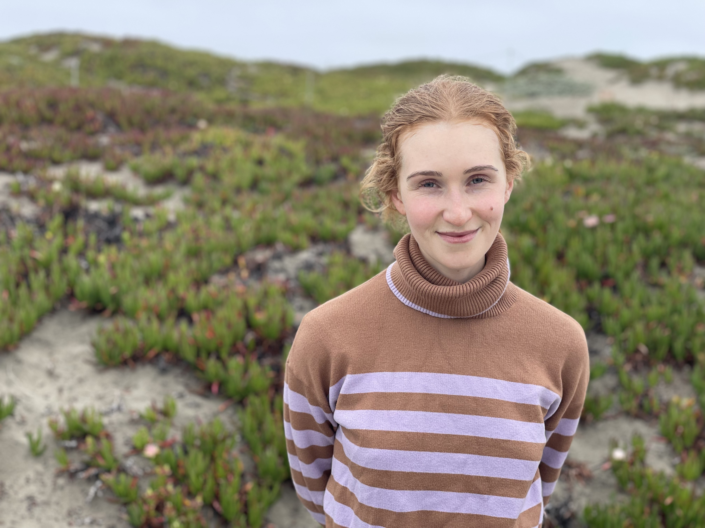

Marie Hogan
I'm a PhD student with UC Berkeley's Agricultural and Resource Economics Department focusing on energy and environmental economics. I'm also a graduate affiliate of the Energy Institute. Before beginning my PhD, I was a research assistant for the St. Louis Federal Reserve, where I worked on forecasting and empirical macroeconomic research. I also worked for the Berkeley Carbon Trading Project, studying REDD+ and improved cookstove carbon offsets.